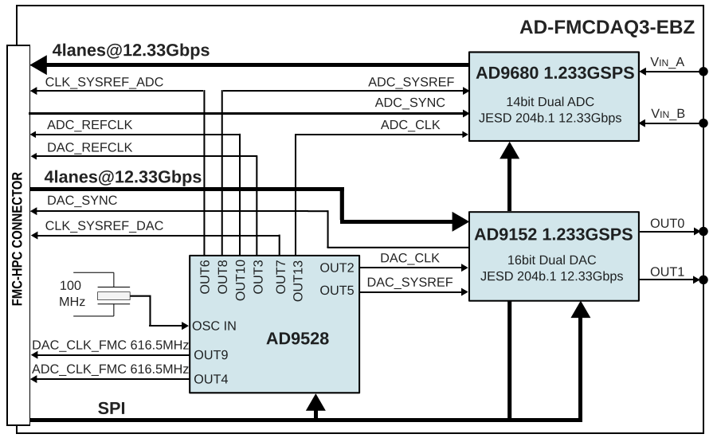
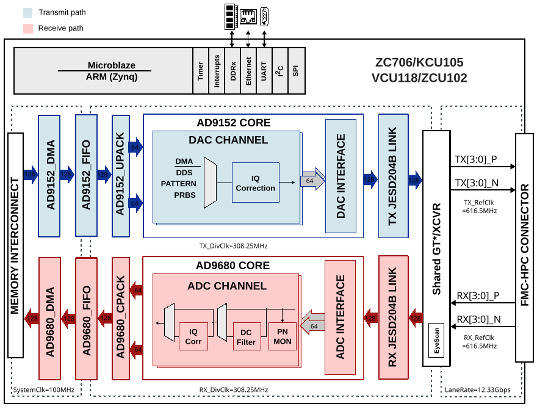
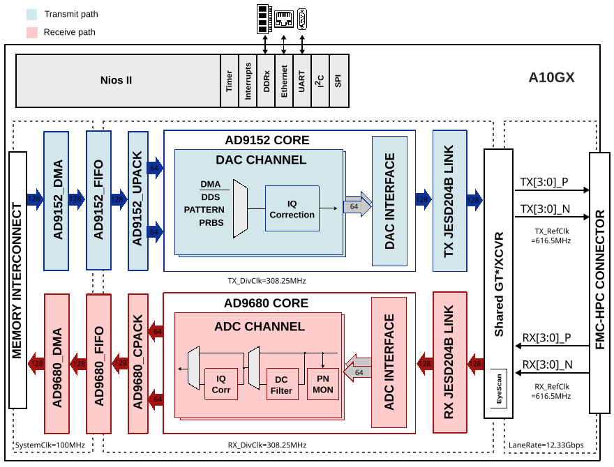

AD-FMCDAQ3-EBZ
The AD-FMCDAQ3-EBZ is an FMC board for the high speed DAC AD9152 and ADC AD9680. It is a data acquisition platform that connects the analog world using FMC to the FPGA.

Introduction
The AD-FMCDAQ3-EBZ module is comprised of the AD9680 dual, 14-bit, 1.25 GSPS, JESD204B ADC, the AD9152 dual, 16-bit, 2.5 GSPS, JESD204B DAC, the AD9528 clock, and power management components. It is clocked by an internally generated carrier platform via the FMC connector, comprising a completely self contained data acquisition and signal synthesis prototyping platform. In an FMC footprint (84 mm x 69 mm), the module’s combination of wideband data conversion, clocking, and power closely approximates real-world hardware and software for system prototyping and design, with no compromise in signal chain performance.
Features
Includes schematics, layout, BOM, Gerber files, HDL, Linux drivers, IIO Oscilloscope
FMC-compatible form factor
Powered from single FMC connector
Provides two channels of ADC and two channels of DAC with full synchronization capabilities
AD9680-1250 ADC
JESD204B (subclass 1) 4-lane coded serial digital outputs
SFDR: 80 dBc at 1.0 GHz AIN, 1.0 GSPS
Noise density: -154 dBFS/Hz at 1.0 GSPS
2 GHz of usable analog input full power bandwidth
Two integrated DDCs per channel
AD9152 DAC
JESD204B (subclass 1) coded serial digital outputs
Supports complex signal bandwidths up to 800 MHz
6-carrier GSM IMD = 75 dBc at 75 MHz IF
SFDR = 85 dBc (BW = 300 MHz) at DC IF
Selectable 2x, 4x, 8x interpolation filters
Applications
Electronic test and measurement equipment
General-purpose software radios
Radar systems
Ultra wideband satellite receivers
Signals intelligence (SIGINT)
Point to point communication systems
DOCSIS 3.0 CMTS and HFC networks
Multiple input/multiple output (MIMO) radios
Automated test equipment
Supported Carriers
Quick Start
The AD-FMCDAQ3-EBZ connects to the HPC connector of the carrier board. The carrier setup requires power, UART (115200), Ethernet (Linux), HDMI (if available) and/or JTAG (No-OS) connections.

Required Software
SD card (8 GB or larger) imaged with the latest Kuiper Linux release
A UART terminal (PuTTY / Tera Term / Minicom), baud rate 115200 (8N1)
SD Card Boot Files (ZCU102)
Copy the following files into the SD card BOOT partition:
Image from
zynqmp-commonfolderBOOT.BIN specific to AD-FMCDAQ3-EBZ + ZCU102
system.dtb specific to AD-FMCDAQ3-EBZ + ZCU102
Hardware Setup (ZCU102)
Insert the SD card into the SD Card Interface Connector (J100).
Connect the AD-FMCDAQ3-EBZ FMC board to the FPGA carrier HPC0 (FMC0) socket.
Plug your DisplayPort monitor into the Display Port Video Connector (P11).
Plug your USB keyboard and mouse into the USB 2.0 connector (J83).
Plug the power supply into the 12 V power input connector (J52). Do not turn the device on yet.
Set the boot mode jumpers on SW6: position 1 ON, positions 2-4 OFF.
Turn on the power switch. Wait approximately 30 seconds for the DONE LED to turn green.
IIO Oscilloscope
The IIO Oscilloscope application can be used to interact with the platform either locally or remotely:
Local: Connect a DisplayPort monitor and USB keyboard/mouse directly to the ZCU102. The IIO Oscilloscope application launches automatically on the desktop.
Remote: Connect USB UART J83 to your host PC and plug an Ethernet cable into the RJ45 connector (P12). Use
ifconfigon the UART terminal to obtain the board IP address, then connect using the IIO Oscilloscope on your host PC via Settings > Connect.
Note
This is a persistent filesystem. Always shut down properly from the
terminal (sudo shutdown -h now) before disconnecting power, otherwise
the SD card may be corrupted.
Hardware
Components
The FMC board includes the following products by Analog Devices:
AD9680 14-bit, 1250 MSPS, dual JESD204B ADC
AD9152 dual, 16-bit, 2500 MSPS, JESD204B DAC
AD9528 JESD204B clock generator with 14 LVDS/HSTL outputs
ADP2384 20 V, 4 A, synchronous, step-down DC-to-DC regulator
ADP7104 20 V, 500 mA, low noise, CMOS LDO
ADP150 ultralow noise, 150/200 mA LDO
ADP1741 2 A, low Vin, low dropout, CMOS linear regulator
ADP1755 low Vin, 1.2 A LDO
ADM7154 600 mA, ultralow noise, high PSRR, RF linear regulator
AD7291 8-channel, I2C, 12-bit SAR ADC for voltage monitoring
Parts List

Board Size
The size of the board (not including the SMA connectors) is 3.12 inches by 2.72 inches (approximately 79 mm x 69 mm).
Functional Overview
The system consists of four functional partitions: transmit path, receive path, clocking, and power supply.

Transmit
The reference design generates the signals for AD9152 either from an internal DDS or external memory (via VDMA). The internal DDS consists of four independent signal generators with programmable phase offset and frequency. These four signal generators are paired to create two tones that are interleaved and driven to the DAC.
Receive
The reference design transfers the received data from the AD9680 to DDR via DMA. An optional off-line FFT core may be used to generate a spectrum plot.
Clocking
The system is clocked through an on-board crystal (100 MHz). The clock path mainly consists of the AD9528 which up-converts this signal to ~3.7 GHz, and then divides this back down to any integer divider of this ~3.7 GHz output.
The default reference design uses the following configuration:
Crystal generates a fixed clock frequency of 100 MHz
AD9528 creates:
1233 MHz for the DAC sample rate
1233 MHz for the ADC sample rate
616 MHz for the reference clocks to the FPGA
Power
The board receives all power from the FPGA board through the FMC connector. The monitoring function of the board’s DC voltages is accomplished using the AD7291 SAR ADC.

The VADJ pin from the FMC connector is used for supplying the translators VCCA voltage. Supported voltage values of this pin are: 1.2 V / 1.5 V / 1.8 V / 2.5 V / 3.3 V.
HDL Reference Design
The reference design is a processor based (ARM, Nios II or Microblaze) embedded system. The device interfaces are shared by the same set of transceivers followed by the individual JESD204B and ADC/DAC cores. The cores are programmable through an AXI-lite interface. The data path consists of independent DMA interfaces for the transmit and receive paths.
Block Diagrams



Digital Interface
The digital interface consists of 4 transmit and 4 receive lanes running at 12.33 Gbps (default). The transceivers then interface to the cores at 128 bits at 308.25 MHz. The data is sent or received based on the configuration (programmable) from separate transmit and receive chains.
DAC Interface
The DAC data may be sourced from an internal data generator (DDS, pattern or PRBS) or from the external DDR via DMA. The internal DDS phase and frequency are programmable.
ADC Interface
The ADC data is sent to the DDR via DMA. The core also supports PN monitoring at the sample level.
HDL Source Code
Software Support
Linux Drivers
Device Trees
No-OS Project
More Information
Support
If you have any questions regarding the AD-FMCDAQ3-EBZ feel free to ask on the FPGA Reference Designs Forum.